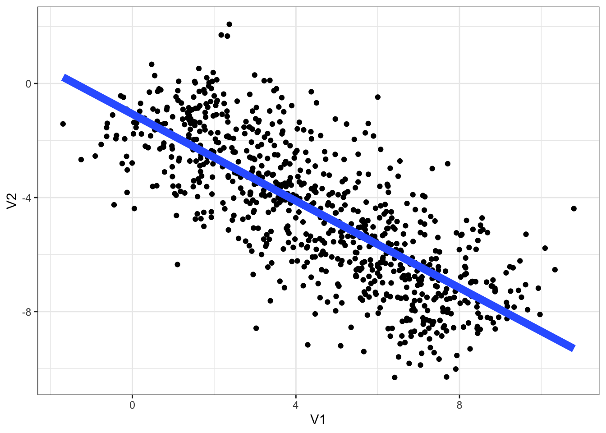
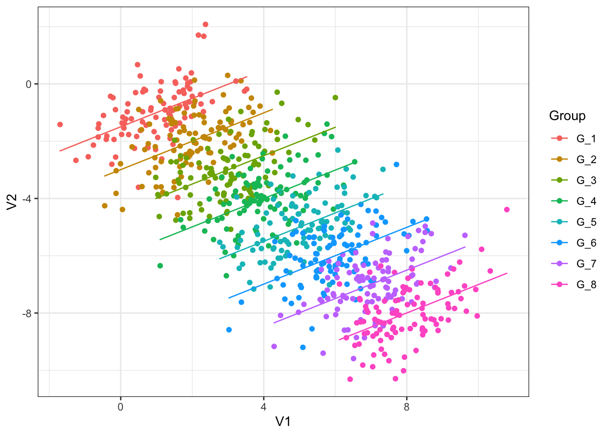

library(tidyverse)
library(here)
# To fit mixed effects models
library(lme4)
library(lattice) # required for some plots in lme4.
# This package contains functions to simulate Simpson's paradox data.
library(bayestestR)
# set the ggplot theme. You might try some alternatives here.
# The documentation which appears if you type ?theme_bw will also show the
# other possible prebuilt themes.
theme_set(theme_bw())5 Linear Mixed Effects Models
5.1 Overview
This chapter motivates and explains the idea of linear mixed effects models and shows how to implement them.
5.2 Exercises
I assume you are using the project from the previous chapters. If you don’t have this set up yet, start from the ‘Exploratory Data Visualisation’ chapter.
Start a new script or markdown file and load the following libraries. Install them if they are not available to you using install.packages().
As before, load the data with:
big_dia <- read_csv(here('data', 'big_dia.csv'))5.2.1 Simpson’s Paradox
‘Simpson’s paradox’ can be used to motivate the use of both control variables and random effects. We’re using it to motivate random effects.
First simulate some data. You can change n or groups as you like.
simpson_data <- simulate_simpson(n = 100, groups = 8)Here is a simple plot of the data with a simple linear regression using geom_smooth().
simpson_data |>
ggplot(
aes(
x = V1,
y = V2
)
) +
geom_point() +
labs(
V1 = "explanatory variable",
V2 = "response"
) +
geom_smooth(method="lm", se=FALSE, linewidth=3)
Recall the material on ggplot2 from earlier chapters. Modify the plot so each group is coloured differently and has its own linear trend line. You’ll have to figure out which variable in the data frame simpson_data tells you which group and observation comes from.
The plot you have made, if you succeeded in the exercise, shows multiple independent regressions (one for each group). This is not the same as mixed effects, which can pool information together across the different groups.
Fit a simple linear regression model predicting V2 by V1 using
lm(). Plot predictions for this model using the techniques introduced in the previous session. What is wrong with the simple linear regression?Complete the following code block to fit a model of the Simpson’s paradox data with random intercepts for each group.
```{r}
simpson_fit <- lmer(
formula = V2 ~ V1 + (1|???),
data = ???
)
```Run the code.
Click here for the answer to question 2.
simpson_fit <- lmer(
formula = V2 ~ V1 + (1|Group),
data = simpson_data
)We can generate predictions from this model for each line in the data.
Complete the following code block to generate predictions for each group using the predict() function
```{r}
simpson_data <- simpson_data |>
mutate(
re_predictions = ???
)
```Run the code.
Click here for the answer
simpson_data <- simpson_data |>
mutate(
re_predictions = predict(simpson_fit)
)We now plot these predictions:
simpson_data |>
ggplot(
aes(
x = V1,
y = V2,
colour = Group
)
) +
geom_point() +
# override part of the aesthetic mapping to get predictions into `geom_path`
geom_path(
aes(y = re_predictions)
)
Letting the model know about the grouping structure, via random intercepts, is enough to fix the problem with the simple linear regression. If you are interested, compare this to a multiple linear regression with Group as fixed effect.
5.2.2 Word duration and frequency
Complex mixed effects models benefit from scaling and/or centring variables. This is true both for humans and for the computer. For us, it can help with interpretation of models. For the machine, it can help with the mathematics of fitting the model.
Both use the scale() function.
Look at the documentation for scale().
Work out how to scale only, centre only, and do both using the function. What is the default behaviour?
Create two new variables in
big_dia:centred_frequency, which centresunigram.google.gb.scaled_duration, which scales and centresWordDuration
Fit a model with
scaled_durationas the response,centred_frequencyandfinalas fixed effects, and random intercepts forSpeakerandTargetOrthography(i.e. the word).Look at the summary and plot the overall model prediction. Note that you can generate predictions for each
Speakerand ignoringSpeakerby using there.formargument topredict(). Sayre.form = NAto ignore groups.
Click here for the answer to (2)
big_dia <- big_dia |>
mutate(
centred_frequency = scale(
unigram.google.gb,
scale=FALSE
),
scaled_duration = scale(WordDuration)
)Click here for the answer to (3)
intercept_fit <- lmer(
scaled_duration ~ centred_frequency + final +
(1|Speaker) + (1|TargetOrthography),
data = big_dia
)We can also add random slopes. Recall that (1 + variable|group) fits a random intercept and slope for each group and estimates the correlation of the intercepts and slopes.
- Extend the model you fit in (3) to include a random slope on
centred_frequency. Explore this model using the tools we have considered already.
Click here for the answer to (5)
slope_fit <- lmer(
scaled_duration ~ centred_frequency + final +
(1 + centred_frequency|Speaker) + (1|TargetOrthography),
data = big_dia
)How do we test the significance of centred frequency? We discussed using the anova() function for model comparison.
- Fit a model which matched the model in (5), but doesn’t include
centred_frequencyanywhere. Use the argumentREML = FALSEinlmer(). Compare this model with the model in (5) using theanova()function, with argumenttest = 'Chisq'. Does this method indicate a statistically significant effect ofcentred_frequency? What is the \(p\)-value?
We can extracting random effects terms from our model using the ranef() function.
re_slope <- ranef(slope_fit)Look at the structure of this object in the RStudio Environment pane (top right)
Make a histogram of the random intercepts of
TargetOrthography. Does this look normally distributed to you?Create a scatter plot of speaker intercepts and slopes for
Speaker. Are these values correlated? What might this suggest about the effect of frequency on duration?